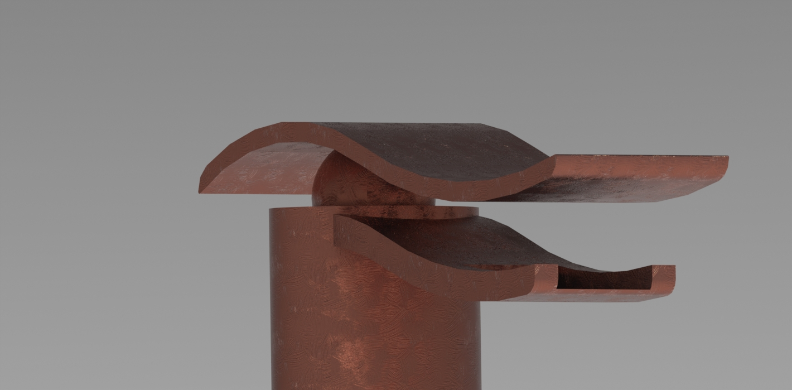

Watertapp
OUR NEW WATERFALL TAP FOR HOME

Watertapp is an useful, comfortable and easy mixer tap for home washbasin, it is functional, intuitive and attractive because of his peculiar form and its wasserfall fall, however it does not lose its formal appearance. It is avaiable in different materials.
It is inspired by the shapes of the water and main- tains some minimal measurements inside to allow it to function properly. We decided to prioritize a beautiful but functional design.
1.Conceptualisation phase: We worked on different brainstorming sessions. We defined the criteria that seemed most appropriate to us, deciding that we wanted a different design inspired in the water waves.
3.Technical Information: This phase involved researching how faucets work. To do this, the tap was disassembled into its various parts, measurements were taken, and the most essential ones were noted. Additionally, information about its standardization was gathered.
2.Shape Prototyping:
This phase consisted of conducting various tests on the shape of our faucet. We used modeling clay to have greater control over the forms and possibilities.
4.3D Modeeling: This phase includes 3D modeling, following the shape that inspired us and considering essential technical size factors, such as the channel through which the water must flow. During this phase, several tests were conducted to select the final design.
This site was created by Mari
 Back
Back